Repair Procedures
Removal
1. Loosen the windshield wiper arm nut (B) after removing a wiper cap (A).
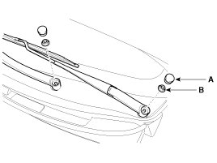
2. Remove the windshield wiper arm and blade.
3. If necessary, release the wiper blade fixing clip by pulling up and remove the wiper blade from the inside radius of wiper arm.
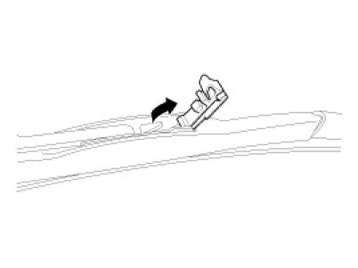
4. Disconnect the washer hose (A) connected to cowl top cover.
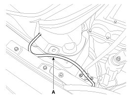
5. Remove the weather strip and the cowl top cover (A) after removing 4 rivets.
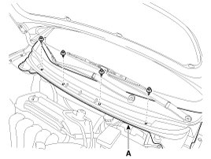
6. Disconnect the wiper motor connector from the wiper motor & linkage assembly.
7. Remove the windshield wiper motor and linkage assembly (A) after removing 2 bolts.
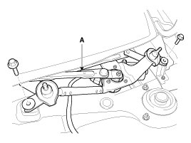
8. Hold the wiper motor crank arm and remove the upper linkage (A) from the wiper motor crank arm.
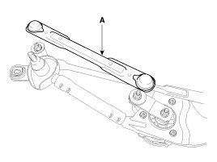
CAUTION:
Before removing the wiper motor and linkage assembly, make sure that the linkage is stopped at auto stop position.
To install the wiper motor crank arm exactly, check that the linkage is aligned with the crank arm in straight line and the angle of each linkages.
Be careful not to bend the linkage.
9. Remove the wiper motor(A) with 3 bolts.
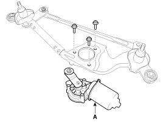
Installation
1. Install the wiper motor.
2. Install the crank arm.
CAUTION:
To install the wiper motor crank arm, make sure that the linkage is aligned with the crank arm in straight line and set the angle of each linkages exactly.
3. Install the lower and upper linkage to the wiper motor crank arm.
CAUTION:
To install the wiper motor crank arm, make sure that the linkage is aligned with the crank arm in straight line and set the angle of each linkages exactly.
Be careful not to bend the linkage.
4. Install the wiper motor and linkage assembly and then connect the wiper motor connector.
Tightening torque:
7 - 11Nm (0.7 - 1.1, kgf.m, 5.0 - 7.9 lb-ft)
5. Install the cowl top cover.
6. Install the windshield wiper arm and blade.
Tightening torque:
22.5 - 26.4 Nm (2.3 - 2.7 kgf.m, 16.6 - 21.7 lb-ft)
NOTE:
- The windshield wiper motor must be cycled to make sure that it is in the auto stop position.
If necessary, adjust the wiper arm and blade.
7. Install the wiper arm and blade to the auto stop position.
A : Auto stop position (Blade)
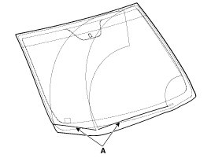
8. Set the cowl top cover on the specified spray position.
NOTE:
- When you turn on the washer, confirm 50% or more of washer fluid lands within the spray area.
- If the spray area is not within the standard positions, adjust the nozzle(s).
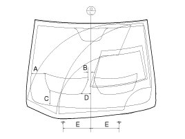
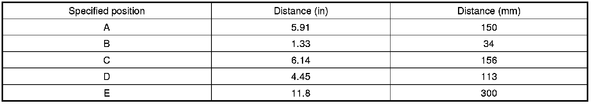
Inspection
Speed Operation Check
1. Remove the connector (A) from the wiper motor.
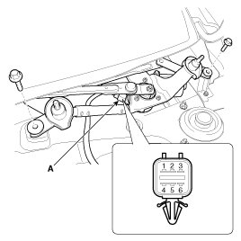
2. Attach the positive (+) lead from the battery to terminal 2 and the negative (-) lead to terminal 5.
3. Check that the motor operates at low or high speed as below table.
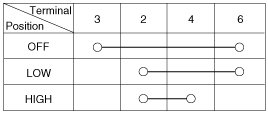
CAUTION:
Common sources of contamination are insects, tree sap, and hot wax treatments used by some commercial car washes. If the blades are not wiping properly, clean both the window and the blades with a good cleaner or mild detergent, and rinse thoroughly with clean water.